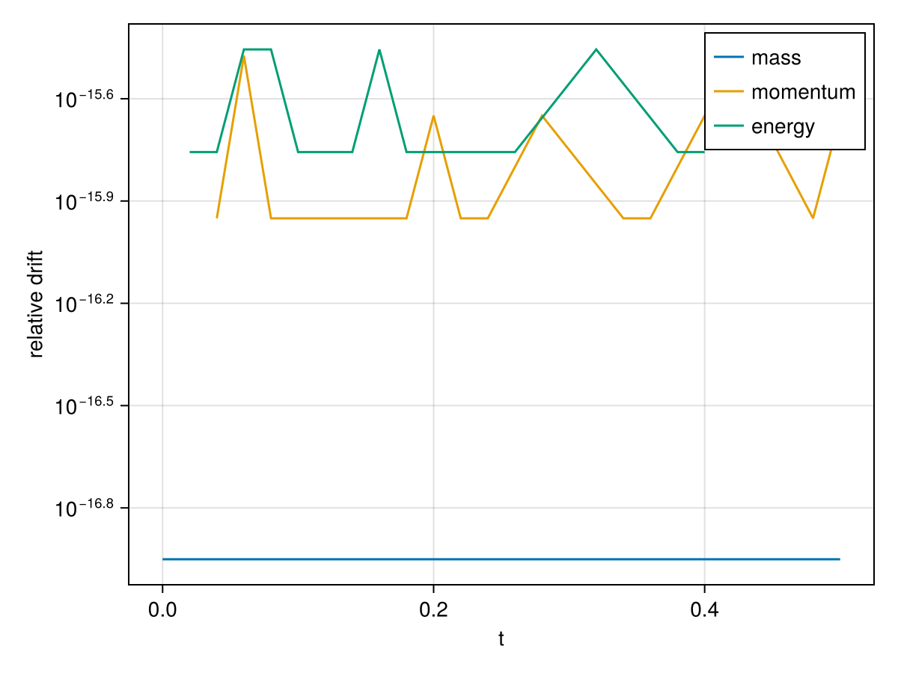
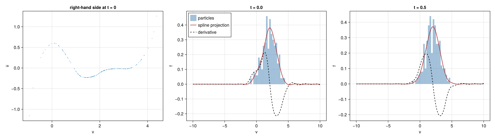

Lenard–Bernstein collisions
The Lenard–Bernstein operator is the simplest collision operator that relaxes a distribution to a Maxwellian. In one velocity dimension, the conservative form of the PD-LB manuscript is
\[\frac{\partial f}{\partial t} = \nu \, \frac{\partial}{\partial v} \left( \frac{\partial f}{\partial v} + (A_1 + A_2 v) f \right) ,\]
with the collision frequency $\nu$. The coefficients $A_1$ and $A_2$ are chosen so that the operator conserves the momentum and the energy. With $A_1 = 0$ and $A_2 = 1$ it is the plain operator, which conserves the mass only and relaxes every distribution to the unit Maxwellian.
The particle discretisation
The operator is a continuity equation $\partial_t f + \partial_v (a f) = 0$ with the transport velocity $a = -\nu (\partial_v f / f + A_1 + A_2 v)$. The particles move with this velocity. The ratio $\partial_v f / f$ is not defined for the particle measure, so the particles are projected onto a spline $f_s$ at every evaluation, and the ratio is that of $f_s$:
\[\dot{v}_\alpha = - \nu \left( \frac{f_s'(v_\alpha)}{f_s(v_\alpha)} + A_1 + A_2 v_\alpha \right) .\]
Every model on this page therefore takes two distributions: the ParticleDistribution that carries the state, and a SplineDistribution, wrapped in a CollisionEntropy, that receives the projection.
model = ConservativeLenardBernstein(pdist, CollisionEntropy(sdist); ν = 1.0)The projection is the $L^2$ projection of Projections. Two of its properties limit every run:
- A particle outside the velocity domain of the spline throws a
DomainError. Choose the domain wide enough for the whole run, or give the mesh oversized end cells. - The projection of a sparse particle sample can be negative where the sample is thin. The operators that divide by $f_s$ throw a
DomainErrorwhere $f_s \le 0$ at a particle. More particles or fewer basis functions help. A positivity-preserving projection is not implemented; K8 ofKNOWN_ISSUES.mdrecords it.
The three operators of the PD-LB manuscript
| model | right-hand side | conserves | default integrator |
|---|---|---|---|
LenardBernstein | $-\nu (f_s'/f_s + v)$ | mass | RK438() |
ConservativeLenardBernstein | $-\nu (f_s'/f_s + A_1 + A_2 v)$ | mass, momentum, energy | ImplicitMidpoint() |
RescaledConservativeLenardBernstein | $-\nu (A_1 f_s'/f_s + A_2 + v)$ | mass, momentum, energy | ImplicitMidpoint() |
The conservative coefficients solve the $2 \times 2$ system of compute_coefficients, which states that $\sum_\alpha w_\alpha \dot{v}_\alpha = 0$ and $\sum_\alpha w_\alpha v_\alpha \dot{v}_\alpha = 0$. The rescaled operator divides the conservative right-hand side by $A_2$, which is a rescaling of the time; its coefficients are those of compute_coefficients_rclb.
The conservation of the particle momentum and energy holds on every basis, because the coefficients are solved from the particle sums. The moments of $f_s$ agree with those of the particles only where the basis reproduces $1$, $v$ and $v^2$: the default Free() boundary condition does, and ConservativeLenardBernstein warns on a basis that does not. The entropy of $f_s$ describes the evolved particles only on such a basis.
GeometricIntegrator advances each model as an ODE of the particle velocities. The implicit midpoint rule conserves the quadratic invariant $\sum_\alpha w_\alpha v_\alpha^2$ exactly, so the conservative operators keep the momentum and the energy to rounding:
using HDF5
using Random
using VlasovMethods
Random.seed!(1)
pdist = ParticleDistribution(1, 1, 200)
pdist.particles.v .= 2 .+ randn(1, 200)
pdist.particles.w .= 1 / 200
sdist = SplineDistribution(1, 1, 21, 4, (-10.0, 10.0))
model = ConservativeLenardBernstein(pdist, CollisionEntropy(sdist); ν = 1.0)
method = VlasovMethods.GeometricIntegrator(model, (0.0, 0.5), 0.02)
h5file = tempname() * ".hdf5"
run!(method, h5file)
v = h5read(h5file, "z")
t = h5read(h5file, "t")
w = pdist.particles.w[1, :]
mass = [sum(w) for s in axes(v, 2)]
momentum = [sum(w .* v[:, s]) for s in axes(v, 2)]
energy = [sum(w .* v[:, s] .^ 2) for s in axes(v, 2)]
using CairoMakie
CairoMakie.activate!(type = "png")
plot_drift(t, (mass, momentum, energy))
The momentum and the energy drift at the level of rounding. The mass does not change at all, so its line is drawn one decade below the smallest drift on the axis; Plotting describes this convention.
The right-hand side at a given state shows how the operator moves each particle. The vector field of the method is method.equation.equation.v:
v₀ = copy(v[:, 1])
v̇₀ = zero(v₀)
problem = method.equation
problem.equation.v(v̇₀, t[1], v₀, problem.parameters)
panels = [(v = v[:, s], f = deepcopy(projection(v[:, s], pdist, sdist)),
df = derivative(deepcopy(projection(v[:, s], pdist, sdist))),
title = "t = $(t[s])") for s in (1, length(t))]
plot_velocity_projections(v₀, v̇₀, panels; vdomain = (-10.0, 10.0))
The metriplectic operator of the MP-LB manuscript
The metriplectic formulation writes the collision operator as a symmetric bracket of the entropy. MetriplecticLenardBernstein discretises it on the particles:
\[\dot{v}_\gamma = \nu \sum_\beta \mathbb{G}_{\gamma\beta} \, \frac{\partial S_h}{\partial v_\beta} , \qquad S_h = \int f_s \log |f_s| \, dv ,\]
with the matrix $\mathbb{G}$ of a metric bracket. The bracket conserves the momentum and the energy for any entropy gradient, and $\mathbb{G}$ is negative semi-definite, so $S_h$ decreases. Two brackets are implemented, which differ by a factor in every term and share their equilibria:
DoughertyBracket, the bracket of the manuscript and the default;JeyakumarBracket, the Dougherty bracket times $n_h / (\varepsilon_h - u_h^2)$.
The gradient $\partial S_h / \partial v_\alpha$ differentiates the $L^2$ projection of $1 + \log |f_s|$ (compute_J!), rather than the pointwise ratio $f_s'/f_s$. The entropy is defined where $f_s$ is negative, so this operator needs no positive projection; a node where $f_s$ is zero throws.
Picard_iterate_over_particles! takes one implicit-midpoint step, solved by a Picard iteration of SimpleSolvers. The caller keeps the two previous states and a history of two vector fields, from which the step extrapolates its initial guess:
using LinearAlgebra
using Random
using VlasovMethods
Random.seed!(1)
npart = 200
pdist = ParticleDistribution(1, 1, npart)
pdist.particles.v .= 2 .+ randn(1, npart)
pdist.particles.w .= 1 / npart
sdist = SplineDistribution(1, 1, 21, 4, (-10.0, 10.0))
model = MetriplecticLenardBernstein(pdist, CollisionEntropy(sdist);
ν = 1.0, bracket = DoughertyBracket())
function march(model, v₀, Δt, nsteps)
v = zeros(length(v₀), nsteps + 1)
v[:, 1] = v₀
abstol = 8 * eps() * norm(v₀)
history = zeros(length(v₀), 2)
vnew, vn, vn_minus_one = similar(v₀), copy(v₀), copy(v₀)
for k in 1:nsteps
Picard_iterate_over_particles!(vnew, vn, vn_minus_one, history, k, k * Δt, Δt,
abstol, 1e-50, model)
v[:, k + 1] = vnew
vnew, vn, vn_minus_one = vn_minus_one, vnew, vn
end
return v
end
v = march(model, pdist.particles.v[1, :], 1e-3, 30)
w = pdist.particles.w[1, :]
entropy = CollisionEntropy(sdist)
S = map(axes(v, 2)) do s
projection(v[:, s], pdist, sdist)
entropy()
end
(momentum_drift = abs(sum(w .* v[:, end]) - sum(w .* v[:, 1])),
energy_drift = abs(sum(w .* v[:, end] .^ 2) - sum(w .* v[:, 1] .^ 2)),
entropy_decreases = issorted(S; rev = true))(momentum_drift = 6.661338147750939e-16, energy_drift = 8.881784197001252e-16, entropy_decreases = true)The step reads the particle weights from the model, and it does not write the particles: the caller keeps the velocities. A Picard solve that does not converge throws an error that names the residual. At the parameters of the manuscript, every run stops at a step whose solve does not converge; K95 of KNOWN_ISSUES.md and the section Metriplectic particle methods for the Lenard–Bernstein operator record where.